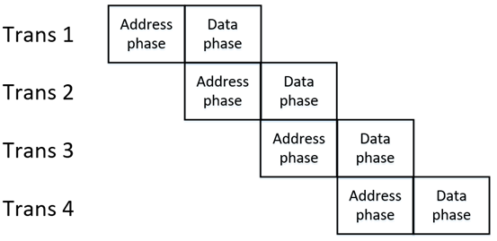

背景知识介绍
在 AMBA® 3 AHB-Lite Protocol 文档中详细介绍了总线的信号描述、传输类型与时序, 由于 Cortex-M0 处理器核的特性, 本实验将会在此文档的基础上精简设计, 简化相关模块的设计.
部分信号说明
| 名称 | 来源 | 描述 |
|---|---|---|
| HADDR[31:0] | Master | 传输地址 |
| HBURST[2:0] | Master | Burst 类型 |
| HSIZE[2:0] | Master | 数据宽度 00 : 8bit Byte 01 : 16bit Halfword 10 : 32bit Word |
| HTRANS[1:0] | Master | 传输类型 00 : IDLE , 无操作 01 : BUSY 10 : NONSEQ , 主要的传输方式 11 : SEQ |
| HWDATA[31:0] | Master | 核发出的写数据 |
| HWRITE | Master | 读写选择(1 : 写, 0 : 读) |
| HRDATA[31:0] | Slave | 外设返回的读数据 |
| HREADOUT | Slave | 何时传输完成(通常为1) |
| HRESP | Slave | 传输是否成功(通常为0) |
Cortex-M0 支持的总线传输
虽然处理器核的代码不具可读性, 但也能从中找到一些蛛丝马迹, 有助于简化设计.
assign HTRANS[0] = 1'b0;
assign HBURST[2] = 1'b0;
assign HBURST[1] = 1'b0;
assign HBURST[0] = 1'b0;
可以看到处理器核端的 HTRANS 最低为恒为 0 , 因此说明 M0 仅支持 NONSEQ 传输, 并且 HBURST 也恒为0 , 因此 M0不支持 BURST 传输. 在后面的外设总线接口设计中, 只需要满足 NONSEQ 类型传输即可, 为简化设计提供的条件.
NONSEQ 传输时序
NONSEQ 作为传输类型中最简单的一种, 只需要查阅参数文档中 Basic transfers 一节.
基本读操作: 如下图.

当 Master 需要从外设读取数据时, 总共需要经历两个阶段: Address phase & Data phase, 因此一次读传输至少需要 2cycle . 在 Address phase 时, Master 会把读取地址输出在地址总线上, 直到 HREADY 为 '1' , 在上图中, 由于 HREADY 一直为 '1' , 那么 Master 在 Address phase 放出地址后直接进入 Data phase ; 在 Data phase 时, Master 会在 HREADY 为 '1' 时读取数据总线 HRDATA 上的数据, 至此传输完成.
基本写操作: 如下图.

类似基本读操作, 写操作也会经历两个阶段: 在 Address phase 时, Master 会把写地址输出在地址总线上, 直到 HREADY 为 '1' , 在上图中, 由于 HREADY 一直为 '1' , 那么 Master 在 Address phase 放出地址后直接进入 Data phase ; 在 Data phase 时, Master 会将写数据放在数据总线 HWDATA 上，直到 HREADY 为 '1' , 传输完成.
具有等待的读写操作: 如下图
正如前面所说, HREADY 为当前正在进行传输的 Slave 返回的 HREADYOUT , Master 端会把 HREADY 既作为进入传输的判断条件(在HREADY为‘0’时不会开始下一个传输), 也会作为传输完成的条件(在HREADY为 ‘0‘ 时不会退出当前传输). 但是, 总线是流水线结构, 虽然对于一次传输至少需要两个 cycle , 但是对于两次传输, 例如把上图中的A与B看作两次传输, 图中的 Address phase 为写传输 A 的地址阶段, 图中的 Data phase 为 A 的数据阶段, 但也同时作为读传输 B 的地址阶段. B地址对应的外设在 Data phase 的第一个周期时, 由于 HREADY 为 0 , 并不能进入传输, 而在第二个周期时, 对于 B 而言与图中 A 的 Address phase 无异，最终实现如下图所示的流水线传输.

对于 Slave 而言, HREADY 只需要作为进入传输的判断条件, 因为进入传输后, HREADY就会被切换到自己的输出HREADOUT 上, 因此当 Slave 根据 HREADY 等信号进入传输状态后, 自行控制传输结束的时间, 并依此控制HREADYOUT 输出.
在后面 SoC 具体设计中, 所有的 Slave 接口都能在两个周期内完成读写(即判断出 Address phase 后能在下一个周期完成数据读写), 因此所有外设的 HREADYOUT 信号都被置为常量 ‘1’ , 这也是简化设计的一个体现.
Memory Map 与总线扩展
本实验所搭建的 SoC 的 memory map 如下图所示.

处理器核通过地址编码访问外设, 所有的外设在处理器核看来都是 memory map 上的一块连续区域, 访问这块区域就是访问对应的外设. 例如上图中的 RAMCODE , 其地址编码为 0x00000000-0x0000ffff , 那么处理器核通过 AHB 总线发出的任何一次总线操作, 只要地址总线上的值在 0x00000000-0x0000ffff 之间, 都认为是处理器核在向 RAMCODE 提出总线操作.
那么在 SoC 具有多个外设, 但是处理器核只有一个 Master 总线接口的情况下, 就需要用到总线扩展模块, 使处理器核能够访问多个外设, 在 AMBA® 3 AHB-Lite Protocol 文档中提供了 Single Master AHB Interconnect 结构, 如下图.

总线扩展模块主要由两部分组成: Decoder 与 Slave MUX .
Decoder 的作用是对地址总线进行译码, 生成对应的外设的选择信号, 同样以 RAMCODE 外设为例, 由于其地址编码为0x00000000-0x0000ffff , 那么只要地址总线 HADDR 的高 16bit 为 0x0000 时, 地址总线的值必定处于 RAMCODE 的地址编码区域中, 则判定为处理器核对 RAMCODE 提起的一次总线操作, 因此 RAMCODE 对应的选择信号 HSEL 将会被置位有效; 若 HADDR 的高 16bit 不为 0x0000 时(例如0x4000), 地址总线的值不处于 RAMCODE 的地址编码区域, 则判定为不是对 RAMCODE 的总线操作, 因此对应的选择信号被置位无效. 如下图所示, 每一个外设在 Decoder 中都需要一个比较器用于产生相应的选择信号.

需要注意的是, 对于每个外设, Decoder 利用地址总线生成选择信号 HSEL 所需要的宽度是不同的. 例如 RAMCODE 的地址编码为 0x00000000-0x0000ffff , 其有效长度为 0x0000-0xffff , 那么 RAMCODE 对于的选择信号(HSEL_RAMCODE)需要对 HADDR 的高 16bit 进行译码; 而 WaterLight 的地址编码为 0x40000000-0x4000000f , 其有效长度为 0x0-0xf , 因此WaterLight 对应的选择信号(HSEL_WaterLight)需要对 HADDR 的高 28bit 进行译码.
Slave MUX 的作用则是通过每个外设的选择信号, 对所有外设返回的读取数据(HRDATA) 、响应信号(HRESP)以及反馈信号(HREADYOUT)进行选择, 保证返回给 Master 端口的数据来自于当前总线操作的目标外设. 例如当前总线操作是读取RAMCODE 的数据, 那么所有外设的选择信号中只有 RAMCODE 对应的选择信号为 '1' , 其他所有选择信号为 '0' , 那么Slave MUX 则根据这些选择信号选中 RAMCODE 返回的数据, 保证处理器核能够正确读取.
根据以上分析, 本实验已经编写好如下图所示的总线扩展模块.

在接下来的讲解中, 每增加一个外设, 只需要将外设 Slave 接口与 Peripheral Side AHBlite Master 接口相连接, 再在 Dcoder 模块中添加对应的译码模块生成选择信号即可.